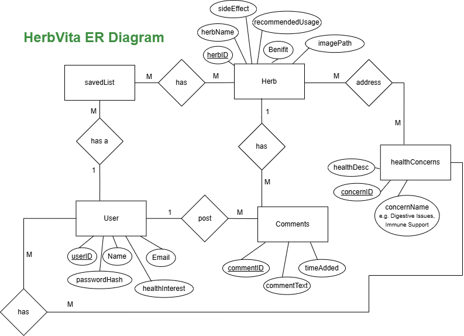
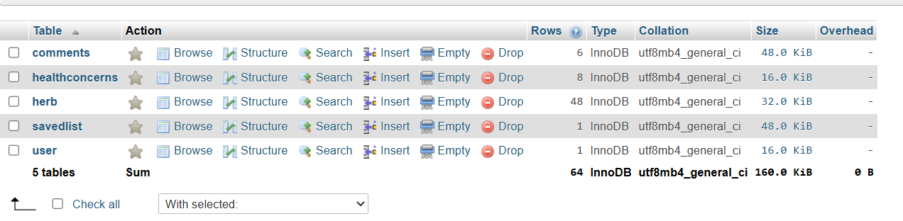

HerbVita: Natural Remedies Education Platform
Empowering users to explore herbal remedies through a custom-built database platform.

Project Overview
HerbVita is an educational web application that allows users to explore medicinal herbs and their potential benefits. The website allows users to search for herbs, browse by categories based on common health concerns, explore weekly rotating featured herbs, and add comments on each herb’s detail page. Registered users can also save herbs to their personalized saved list.
This platform is non-commercial and designed primarily for information and learning purposes, with a user-friendly and responsive front-end experience.
Development Process
Our team used PHP and MySQL for backend development, AJAX and JavaScript for dynamic frontend features, and HTML/CSS for structure and design. We structured the database with five tables: User, Herb, healthConcerns, Comments, and savedList. We chose not to create a dedicated featuredHerb table, instead using date-based logic to rotate featured herbs weekly.
The herb data was sourced from MedlinePlus and entered manually into phpMyAdmin to maintain accuracy and structure.

Entity-Relationship diagram outlining the structure of the HerbVita database.

phpMyAdmin view showing the structure of the five main tables: Comments, HealthConcerns, Herb, SavedList, and User.
Key Features & Solutions
- Weekly Rotation: Featured herbs rotate automatically every week using date-based logic, removing the need for manual updates.
- User Authentication: Users can register, log in, and securely maintain sessions. Passwords are stored in hashed form to ensure security.
- User Interaction: Logged-in users can leave comments on herb pages, save herbs to their list, and associate their accounts with specific health concerns.
- Live Search with AJAX: The search bar supports live search with instant AJAX responses, limited to five results, to avoid overloading the page.
Challenges & Learning
Creating a smooth flow of dynamic interaction using AJAX required thoughtful implementation. Debugging session handling across multiple pages helped improve our understanding of secure full-stack development.
Writing SQL queries that joined multiple tables, especially for user-specific content like saved herbs and comments, deepened our skills in relational database design.
Outcome
HerbVita is a fully functioning web application that provides a useful and informative experience for users interested in herbal medicine. It incorporates backend logic, database management, dynamic client-side features, and responsive design. We successfully implemented core features like personalized herb saving, comment functionality, and weekly recommendations within a polished frontend.